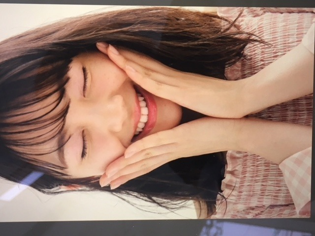
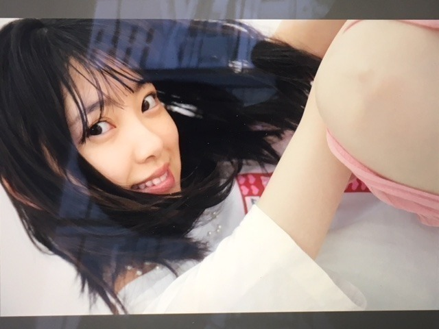

2018/0712Thu近づいてみた
にこ〜( ˆoˆ )


ちらっ^_^
ar発売日です！
アイメイクがかわいいです。
みてねー！

薄メイク。

セブンイレブンさんの台湾ver CMに出させていただいています！
ヒーロー風なCMに注目です！

ついでにロングの時の写真も 。
ロング派ショート派
ありがたい事に髪型についての意見を
日々たくさんいただきます
これからは1つにこだわらず
お仕事で切ったり伸ばしたり染めたり
色々変化もしていくと思います
でも、どんな私もいつも変わらずに
応援してくださる皆さんが大好きです
いつしか日奈子に
未央奈はカメレオンみたいに
いろんな色に染まれるって言われた時、
こんな無色のままでいいのかなって自信を
失いかけてたから少し嬉しかったのを思い出しました
もっと幅広く色んな経験をして
あらゆる色に染まりたいなぁって思います
どんな私も
私であることに変わりはない。
桜の木も花が咲いたと思ったら
緑の葉だけになったり、
冬には花も葉も無いから見た目は乏しく淋しく見えるかもしれないけど樹木自体はしっかりとぶれずにそこにあって...花が咲く春に備えていて。
見え方はその都度違えど桜の木は常に
存在して四季を通していろんな形で人々を魅了していますよね
すごいなぁ
私も芯のあるブレない人になりたいです
o(･x･)/
頑張ろう
前進 積み重ね あるのみ。だね。
そういえば、
とうもろこしと桃が大好きなんですけど
とうもろこしと桃が美味しいところってどこなんだろう？
山梨？新潟？うーん
知りたい...
では。
2018/07/12 12:42


コメント(592)
俺はショート派だけど、ロングもいいし仕事や気分で色々と変えられるのはみおなの魅力だと思う！
これからもカメレオンみおなとして頑張って！笑
俺は山梨に住んでるけど、山梨は桃もとうもろこしも有名だよ〜！
ぜひ来てね！
2日目の神宮でスタンドの通路入ってくれた時、凄く近くて可愛くて嬉しかった！
とうもろこし美味しいの知ってるよ！
おふくろの実家がある青森県岩木山の麓、嶽高原で作られてる嶽きみ。濃厚な味わいで美味しいよ！
全国に配送もしてるから一度食べてみてね！
ブログありがとう❗️
どの髪型もかわいいよ
写真で癒されてます✨
とうもろこしは長野県も美味しいよ
桃は山梨県かな...
岐阜県のオススメ食材はー⁉️⁉️
ゆうたんより
ロングもショートもどっちも似合うから
オールシーズン楽しめるね(*^^*)
桃は関東だと山梨じゃない？
関西だと岡山みたいだよ！
それはそうと堀ちゃんが
尊敬するみるきーが復活するみたいだね。
堀ちゃん同様、カメレオンのように
いろんな顔を見せられる人だね。
堀ちゃんも負けないように
頑張ってこ！
今日も一日お疲れさま。
今月号のarも読んできました。
アイメイクって、一手間加えることで、与える印象をここまで変えるんだなと改めて実感しました。どのメイクも可愛くて、綺麗で。普段の未央奈からギャップを感じました。
おもてなしの達人では、マイ湯呑みを作りましたね。お茶が好きな未央奈にとって、これほど良い機会はなかったのではないでしょうか？
相変わらずマイペースで楽しそうに作業に取り掛かってるので、笑ってしまいました…。
これから、マイ湯呑みを大切に、たくさん使っていきましょう！
未央奈が持つ1本の芯は、ブレることがあっても諦めない気持ちがすごく尊敬します。僕はその姿を3年間見てきて思いました。
「未央奈のやりたいことは、やりたいこと？」とふと思い返すことがあります。やりたいことをやるってすごい難しいことで、そう思うことは僕もよくあります。「どうして自分の思い通りにいかないんだ。力が及ばないんだ」って。
単純なものにこそ、複雑さが宿っている。
たぶん、こういうことなんだと思います。
自分の好きなこと。自分の嫌いなこと。
自分が好きになるもの。嫌いになるもの。
楽しかったこと、悲しかったこと。
今まで言えなかったこと。
全部、未央奈の意のままです。伝えられる時に伝えておいたほうが、必ずあると思います。明確なものだけが良いとは限らない。そんな日があっても、僕はいいと思いますよ。。。
そういえば、久しぶりに「別れ際、もっと好きになる」と「嫉妬の権利」を聴きました。あの頃に戻ってみたら、何か思い出せるかなって。未央奈も一度、この2曲を聴いてみてください。それがきっといいと思います。
じゃあ、体調管理には気をつけてm(_ _)m
熱中症や、たまごの白さを目指す未央奈は日焼けも気をつけないとだね。。。
ではでは、ねこでした。
薄メイクの方がやっぱりすきぴー(^o^)
アイメイクもいろいろあるんやね！
女の子って大変だ！
だけど楽しそうで良きー(^-^)
髪型は断然ショート派です。
しかしポニーテールが1番好きっていう矛盾 笑
髪染めるの！？
未央奈は黒髪でいてほしいけど、新しい挑戦はしてほしいから許す！
いくちゃんも黒髪の方が絶対良いって思ってたけど茶髪もめっちゃ可愛いから、きっと未央奈も似合うよ(^-^)
とうもろこしと桃！我も好きぴです(*⁰▿⁰*)
でも産地にこだわるような高級な舌を持っていないので、どこのだろうが美味しくいただいています。
安い舌の方が幸せやん 笑
では、今日も1日楽しもうねd(@^∇ﾟ)/ﾌｧｲﾄｯ♪
o(ﾟ▽＾)ﾉｼまたねぃ♪
すごくステキでニヤニヤが止まらなかった^ ^
どんな未央奈ちゃんも可愛くて好き！
変幻自在な未央奈ちゃん、これからもいろんな未央奈ちゃんを見せてね(^_^)
私たちは変わらず応援しまーす！！
ふふふー蜷川実花展に行ってきましたよー( ´艸｀)
まだ開催中ですし..感想苦手ですから感想はなしで..しいていうならお花や桜の写真が綺麗だった。笑
がんばみおなー
だから未央奈からはすごい元気もらえるし、わくわくさせてもらえる！
これからも未央奈らしい表現の仕方で頑張ってね！！
いつも応援してます！！
いつもいつも未央奈に癒されてる(*^_^*)
強くなろうと努力してる未央奈大好き
頑張ってね！
安心・安全だから是非！！
自分の軸さえブレなければ変化することは楽しいことだと思うよ☺︎
変化することって楽しい反面、不安も多くなることだと思う…
進んだその先に正解が待っているっていうわけでもないし
時には自分が嫌になることもあるかもしれない
それでも、未央奈には乃木坂46だったりファンのいる場所があるから大丈夫！
いつでも戻れる場所があるから大丈夫！
いままで見たことがない景色や新たな出会いを楽しみにしながら
変化を楽しんでいこう♪
全ては過去の積み重ね！ いま目の前にある１つ１つを大切にクリアしていこう！！
いつでも応援してるよ٩( 'ω' )و
未央奈はショートもロングもどっちも可愛い！
色々な未央奈が見られるのはありがたいことです。
とうもろこしは何処産のものより、庭で育てたのをとってすぐ茹でたものが一番美味しいよ。
どの写真もめっちゃ可愛いね
大阪楽しみにしてます！
写真ありがと〜♪(´ε｀ )
可愛いっすー（╹◡╹）♡
ロングもショートも似合うよ
色んな色に染まれるって意味ではカメレオンってのもカッコいいですねーヾ(๑╹◡╹)ﾉ"
応援しております(● ˃̶͈̀ロ˂̶͈́)੭ꠥ⁾⁾
とうもろこしと桃は東北かなー？
北の方な気がするけど(*´-`)
どんな未央ちゃんも大好きだから、安心して未央ちゃんの進むべき道をまっすぐ進んでいってね！
でもときには休憩したり寄り道したりしても大丈夫だよ。立ち止まって休憩する未央ちゃんも寄り道して新たなことに気持ちを向けてる未央ちゃんもどんな未央ちゃんもほんとに大好きだからね！
とうもろこしは今が一番良い時期で道の駅などでもたくさんおいていますよ。
桃はもう少しあとかな～。8月が一番美味しい時期だね。同時期にね、シャインマスカットも旬で毎年買うんだ～。
忙しくて時間ないとはおもうけど通販でも買えるので試してみては(^_^)
でも堀ちゃんのパフォーマンス時のとってもとっても素敵な笑顔はもっともっといいね！何回も観てしまう。
やっぱり、未央奈の笑顔は最高ですね‼︎
癒されます♪
個人的には薄いメイクが好き♪
でも、いろんなアレンジで、いろんな未央奈を見せてほしいです…‼︎
メイクで雰囲気を変えられるのは、女子の特権ですからね♪
ちなみに、桃は山梨の名産品ってイメージがあるなあ。
トウモロコシは北海道？
桃のシーズンもそろそろ終わりですね。
今のうちにたくさん食べておかないと‼︎(笑)
桃の優しい甘さって、たまらないですよね♪
自分もフルーツの中では1、2を争うぐらい好きです‼︎
北海道も山梨も、他にも美味しいものがいっぱい。
仕事か何かで、地元の美味しいものをたさん食べれる機会があるといいですね♪
ではでは、また。
明日も未央奈にとっていい1日になりますように♪
もぎたてで美味しだよ！
大好きだよー
桃は岡山かなぁ。
いつもありがと。そんな未央奈が大好き！
堀ちゃん好きそう(笑)
髪型には人によってさまざま好みもありますし、ファンの皆さんにとっても堀さんのヘアスタイルへの思い入れはそれぞれかと思います。でも「だけどどんな髪型でも、やっぱり堀さんが好き」という本質の思いはきっと同じ。カメレオンみたいにいろいろな色で魅せられるのはすてきなことですね。
とうもろこしも桃も夏が旬の食べ物ですから、これから美味しくいただける日々が続きそうで嬉しいな。とうもろこしといえばやっぱり北海道、そして桃といえばやっぱり岡山、というのが王道ではありますまいか。美味しくいただいて元気に夏を乗りきりましょう。
ではまたコメント寄せます。おやすみなさい。
さらばだ、また会おう！（気球に乗って去りぬ〜）
カメレオンって無色なんじゃなくてむしろレインボーだと思いますよ！
りょーへー(R.N.イナダウアーびーむ)だよ♪
今日はついてないなぁ、って思う日もあるよね！でも、未央奈ちゃんみたいにポジティブシンキングするようにしてる！何事もポジティブでいれば乗り越えられると思うな～～
蚊に刺され、お写真からも酷そうなのが伝わる…！きっと未央奈ちゃんのは美味しいんだよ！笑 俺はあんまり刺されないかも！湿疹持ちでもあるから、湿疹なのか、蚊に刺されなのかよく分かんない！
今日ね、後楽園駅近くに用事があって降りたんだけど、観覧車みたらいきたくなっちゃって！一人で東京ドームシティまで行ってきたよ！まぁ、アトラクションに乗る勇気はなかったけど！笑 未央奈ちゃんと一緒に行きたかったなぁ！なーんちって！
ふわぁ、眠すぎる！笑
#毎日コメント
#今日もお疲れ様
#自分に負荷をかけるのが好きだけど
#かけすぎちゃうこともある
#気を付けないとだなぁ
#arとflashとEX大衆
#チェックせねば
#音楽の日もだね
#明日も楽しみおな♡
#おやすみおな(／＼)＼(^o^)／
そもそも中国原産らしいですから，いろんな国や地域の桃の食べくらべをするのも楽しそうですよね。
とうもろこしは，北海道が生産１位ですけど，ほら，岐阜だって多くの農家の方々が作ってらっしゃいますよね。
小中の登下校の際，畑とかにあるとうもろこし見た記憶ありません？
まあ岐阜市内でも畑が多くある地域とあまりない地域があるから一概には言えませんね。特に最近は，畑がどんどん建物に変わっていきますからね。
近所の方や自分の家でつくったとうもろこしはやっぱりおいしいです。地元・岐阜のとうもろこしもご愛顧ください。
私も岐阜出身ですが，未だに何が岐阜の方言なのかわかり尽くせていません。堀さんが口にするのを聞いて，あっこれも岐阜の方言かと気づかされることがよくあります。
地元はもちろん，いろんな地域の特色や産物を知るのって面白いですよね。
また更新よろぴく
トウモロコシも甘甘娘（かんかんむすめ）という種類のものが甘くて美味しくて有名です❗️
arの写真 可愛いね！
O型は蚊に咬まれやすいという話は聞いたことあるよ。
ちなみに僕もO型でよく咬まれる。。。
蚊と暑さに負けず頑張ってね！
えっ、染めるの？？
ショートというかボブ派(*ﾟ▽ﾟ)ﾉ
まぁ、なんでも似合っちゃって可愛いんだけど
ほらーの夏到来だね！
乃木中でみおちゃんがやってたホラーメイク かわいかった！
握手会で・・・駄目だね
でも品のあるホラーファッションってものがあったら
みおちゃんしかこなせないだろうな・・
また変なこと言っちゃった。
蚊の季節は本当に嫌ですね。僕は蚊に入眠を邪魔されるのが心底嫌なので、丑三つ時にゴーストバスターズ口ずさみながら掃除機担いで一時間ほど格闘することもあります。
音楽の日絶対見ますね。応援してます。
昨日ar購入しました
未央奈ちゃんを定期的に観ることができるので、楽しみにしています
髪の長さは、長くても短くても良いと思いますが、色は黒色を保ってほしいです
未央奈ちゃんは、芯のある方だと思いますよ
ただ、前進することと積み重ねることは、大切なことなので頑張って下さい☺️
トウモロコシは北海道、桃は、山梨県、岡山県、福島県、山形県が美味しいと思います
新幹線で夏季限定で白桃アイスを売っていた気がする。
前回はブログとモバメの感想を書きました！
時間→「No.481 2018年7月13日 01:22」
昨日は2通もモバメ、非常に嬉しいです！
今日「音楽の日」でしたね(汗) 告知感謝です！
蓮加ちゃんのブレスレットの話も気になるけどそれより未央奈ちゃん、頭大丈夫ですか？
つまずいた時にどこもぶつけませんでしたか？
「今日はついてない。笑」と書いてあったので大怪我じゃなかったんですね！良かったです！くれぐれも怪我だけは気を付けてくださいね！
一昨日15分間で8ヶ所も蚊に刺されたんだね！
1ヶ所だけでも痒いのに8ヶ所ってヤバ～い！
写真見てビックリしたし、見るだけで痒いのが伝わってきました！確かに1個1個が大きい！
あと、未央奈ちゃんが蚊に刺されやすいのって汗っかきだからかも知れません！
それにきっと美味しいんだと思いますよ(笑)
僕も蚊に刺されやすい方ですが短時間でこんな沢山刺された事は無いです(笑)
こんな風物詩イヤだね(笑)
こういう時は相葉ちゃんがCMされている液体ムヒが良いと思います！早く治りますように！
ここまで読んで頂きありがとうございました！
毎日お仕事お疲れ様です！体調にはくれぐれも気を付けて頑張ってくださいね！
ではでは！
ツインテール似合ってる！！
可愛い！
幕張メッセの個握楽しみ！！！！
コメントする